オンボーディング・最初のDotOnboarding · the first Dot온보딩 · 첫 Dot
友だちがいなくても、撮るたびにコラージュが育つNo friends yet, and the collage still grows with every photo친구가 없어도 찍을 때마다 콜라주가 자란다
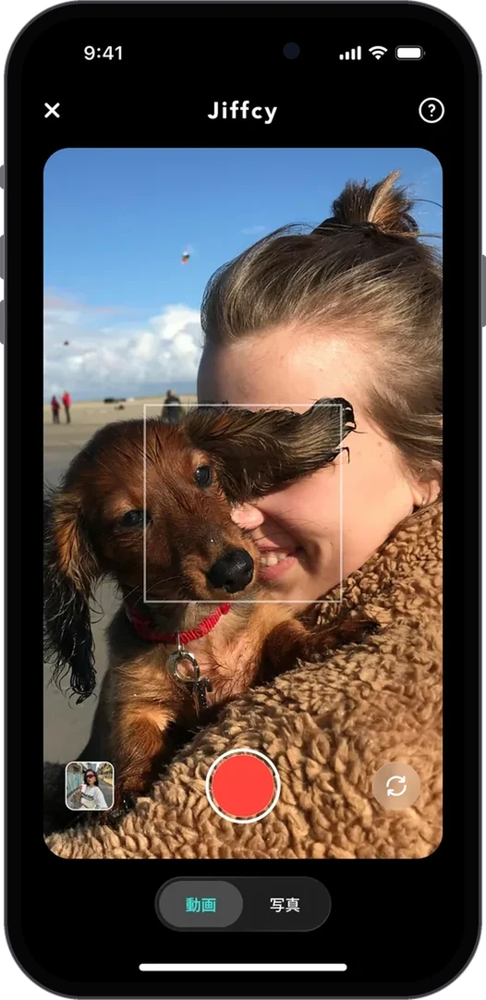
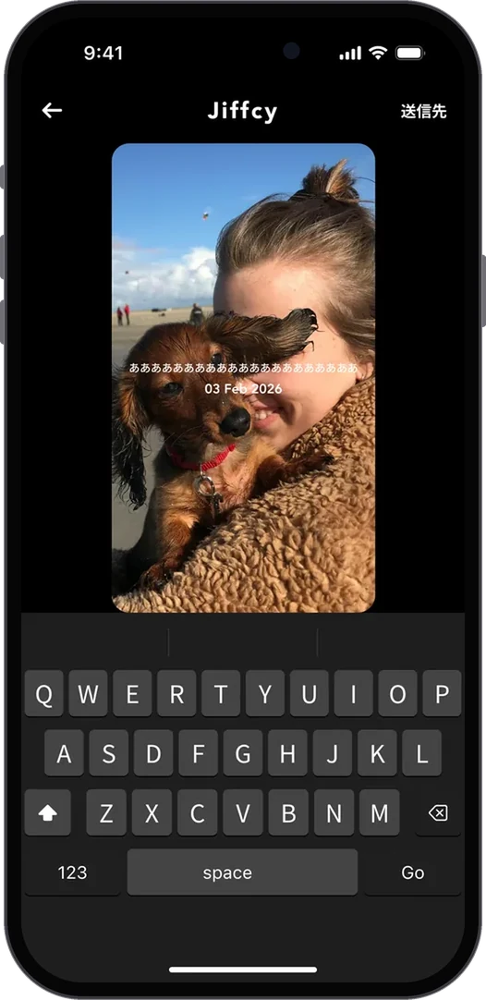
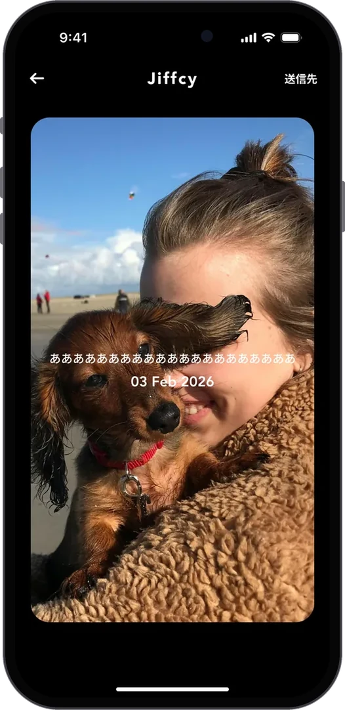
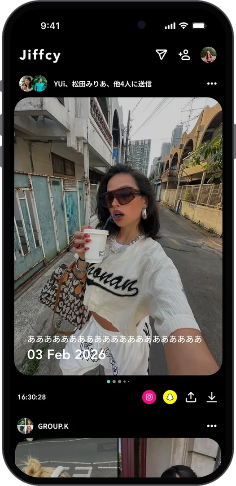
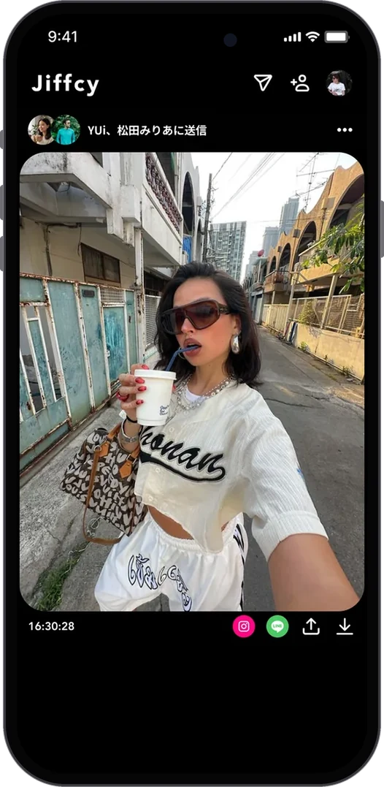
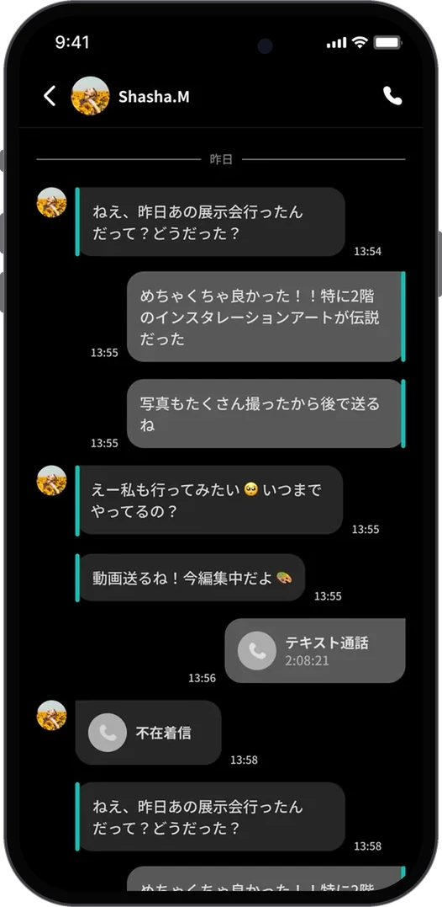
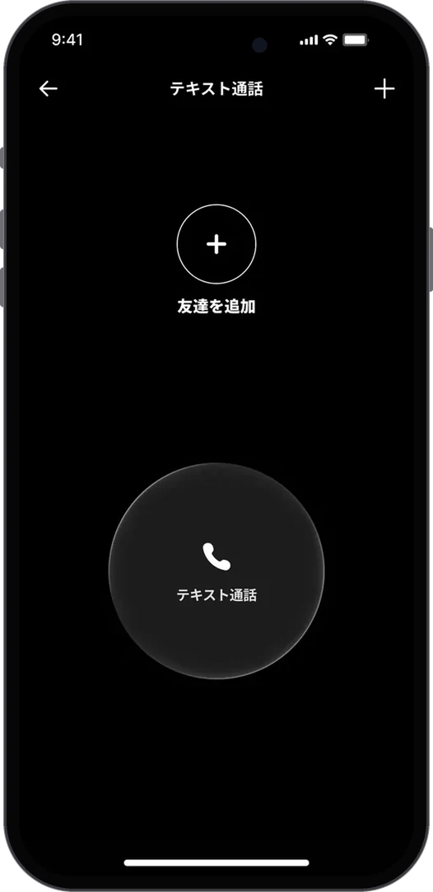
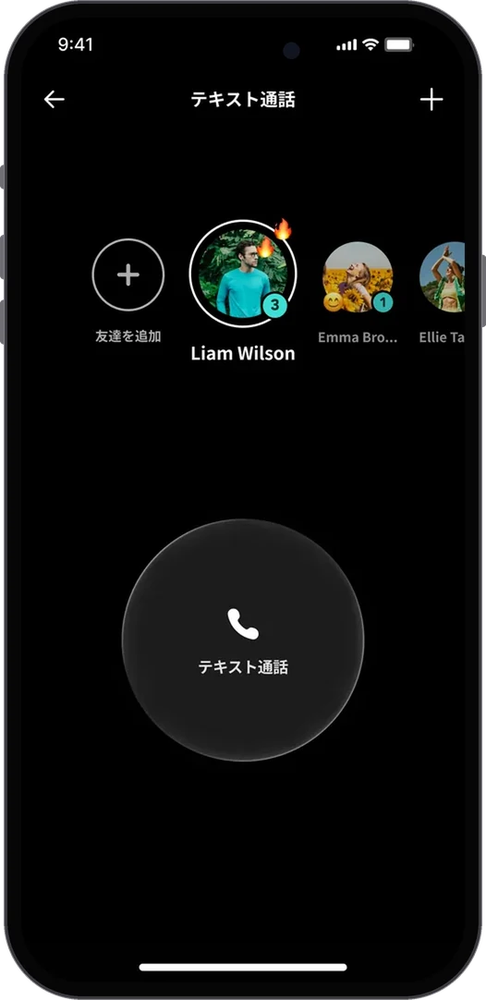
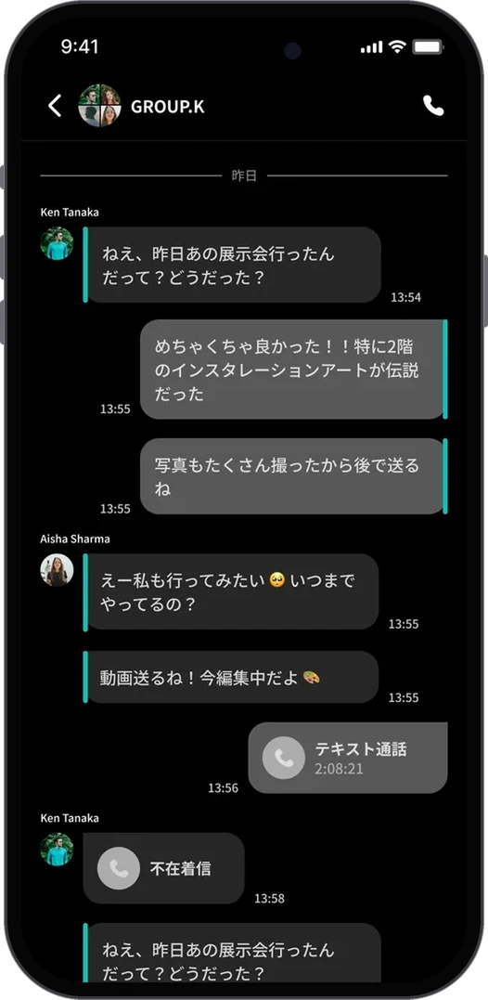
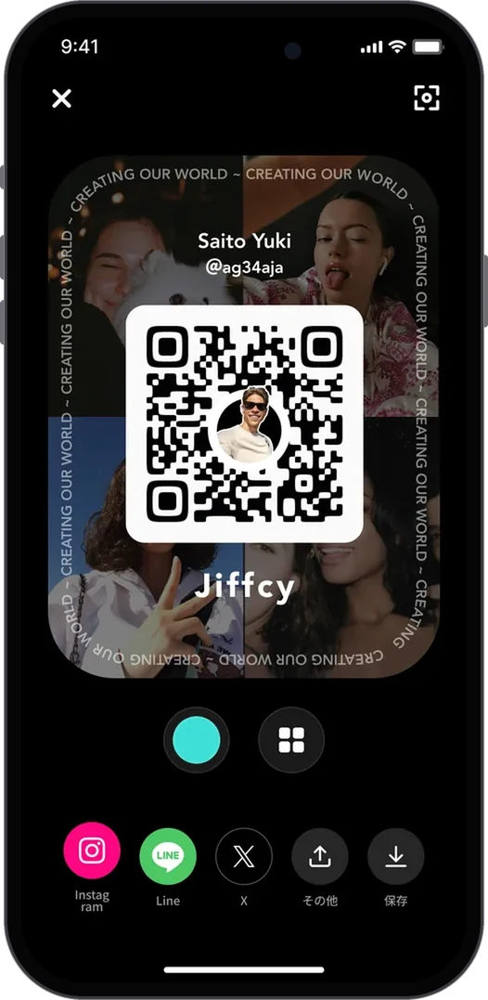
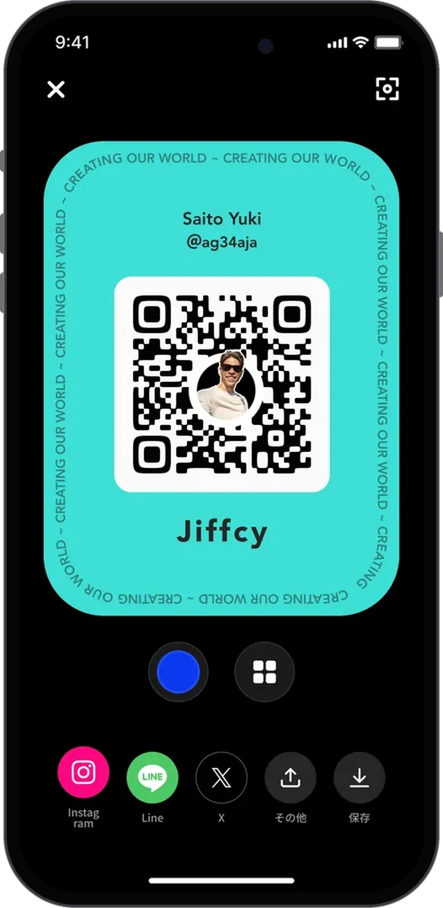
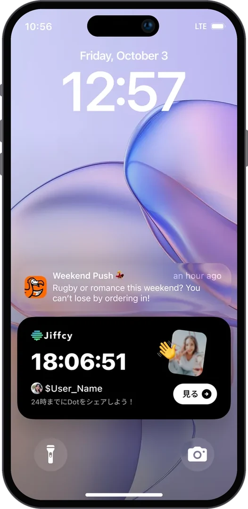
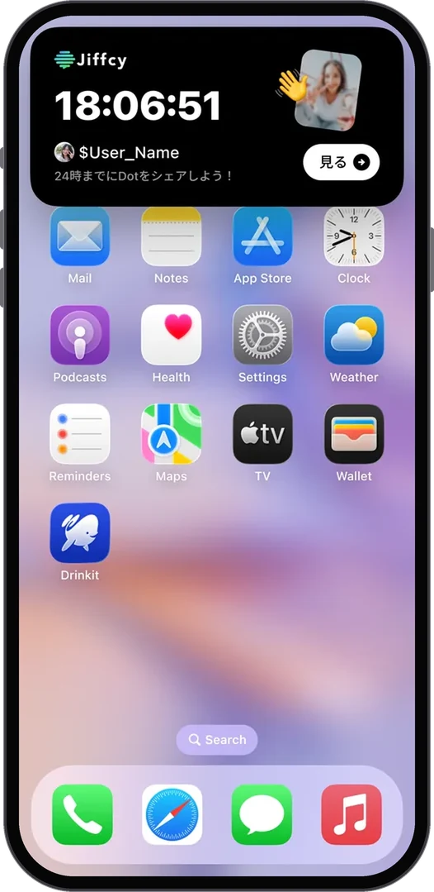
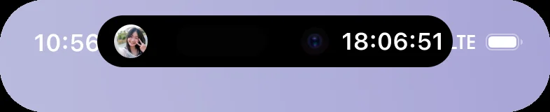
- 01問題定義Problem문제정의
Jiffcyでは、QRコードで1人ずつ友だちを追加します。新規ユーザーは最初、友だちがいない状態から始まるため、価値を感じる前に離脱しやすい構造でした。
On Jiffcy, you add friends one at a time by QR code. New users start with no friends at all, so they tend to leave before they feel any value.
Jiffcy에서는 QR 코드로 친구를 한 명씩 추가한다. 새로 가입한 사용자는 친구가 한 명도 없는 상태에서 시작하기 때문에 앱의 재미를 느끼기도 전에 떠나기 쉬웠다.
- 02リサーチResearch리서치
- 主な機能「Dots」は、友だち同士で写真・動画を送り合うと自動でコラージュができる。価値は「相手がいる」ことに依存している。
- The core feature, Dots, turns photos and videos exchanged between friends into an automatic collage. Its value depends on having someone on the other side.
- 핵심 기능 "Dots"는 친구와 사진·영상을 주고받으면 콜라주가 자동으로 만들어진다. 함께할 친구가 있어야 가치가 생긴다는 뜻이다.
- 03制約Constraints제약조건
- 「クローズドであること」はプロダクトの核なので、公開タイムラインで空白を埋めることはできない。
- 友だち追加はQRで対面が前提。オンボーディング中に必ず完了できるとは限らない。
- Being closed is the core of the product, so an open public feed can't fill the empty state.
- Adding friends by QR assumes meeting in person, so it can't always be completed during onboarding.
- "폐쇄형"이라는 점이 이 서비스의 핵심이라, 공개 피드로 빈 화면을 채울 수는 없다.
- 친구 추가는 QR로, 직접 만나서 하는 게 전제다. 가입하는 그 자리에서 꼭 끝낼 수 있는 건 아니다.
- 04決定Decision결정ケーススタディ要約Case summary케이스 스터디 요약
一人でも続けて写真を投稿できる機能を加え、オンボーディングで紹介する
Add solo continuous photo posting and introduce it in onboarding
혼자서도 사진을 계속 올릴 수 있는 기능을 더하고, 온보딩에서 먼저 보여준다
友だちがいなくても「自分の記録」として価値を感じられれば、友だちを誘う理由が後から生まれる。価値の順番を入れ替える判断。
If people get value from it as their own record before they have friends, they find a reason to invite friends later. I flipped the order in which people get value.
친구가 없어도 "나만의 기록"으로 재미를 느낄 수 있다면, 친구를 부를 이유는 그다음에 자연스럽게 생긴다. 가치를 느끼는 순서를 바꾼 판단.
順番は「プロフィール写真 → 最初のDot → QR」
Order: profile photo → first Dot → QR
순서는 "프로필 사진 → 첫 Dot → QR"
いきなり友だち追加を求めず、まず自分を表現し、Dotを一つ作ってからQRを見せる。友だちに見せたいものがある状態で追加をお願いするため。
Don't ask for friends up front. Let people express themselves, make one Dot, then show the QR, so they have something worth showing when they're asked to add someone.
처음부터 친구를 추가하라고 하지 않는다. 먼저 나를 표현하고 Dot을 하나 만든 다음 QR을 보여준다. 친구에게 보여줄 무언가가 생긴 뒤에 초대를 권하기 위해서다.
- 05改善Iteration개선
導入後のオンボーディング完了率や友だち追加率を確認しながらチームと改善点を議論し、改善を続けています（現在進行中）。友だちがいない最初の画面をさらに埋めるための次の施策も開発中で、近くリリース予定です。
We're tracking onboarding completion and friend-add rates after the change, and keep discussing and shipping improvements with the team (ongoing). The next step for the empty first screen is in development and due to ship soon.
도입 후 온보딩 완료율과 친구 추가율을 확인하면서 개선할 점을 팀과 계속 논의하며 다듬어 가고 있다. (현재 진행 중) 친구가 없는 첫 화면을 더 채우기 위한 다음 기능도 개발 중이며, 곧 출시될 예정이다.